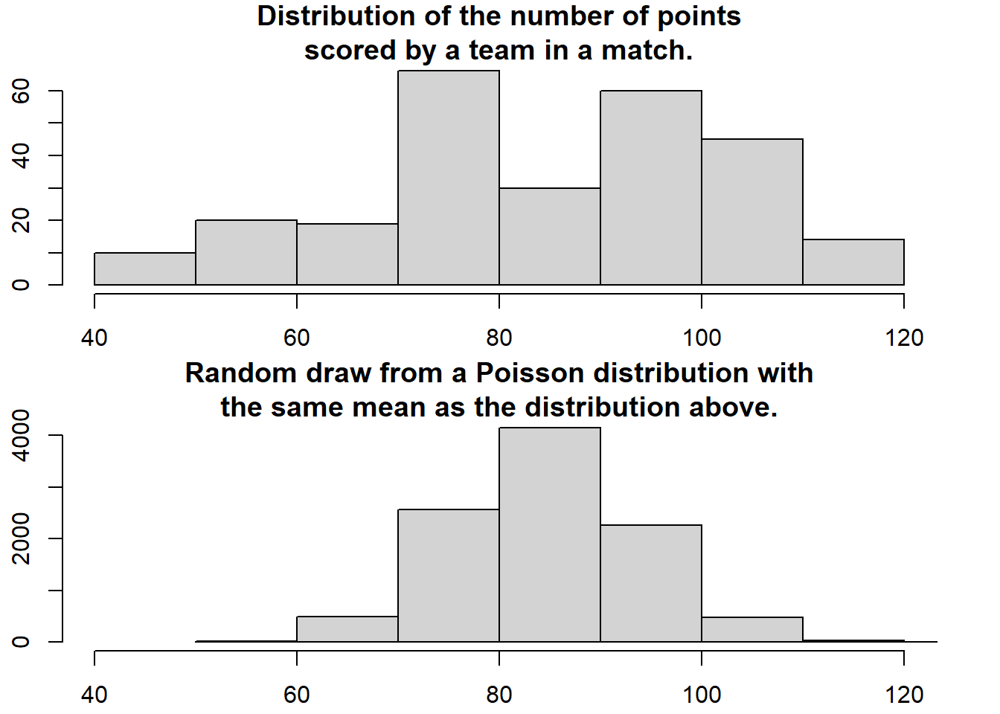
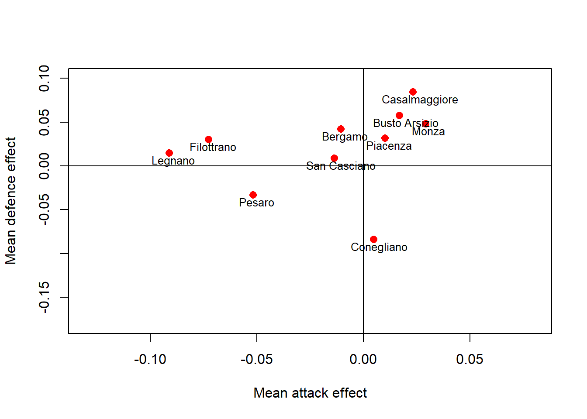
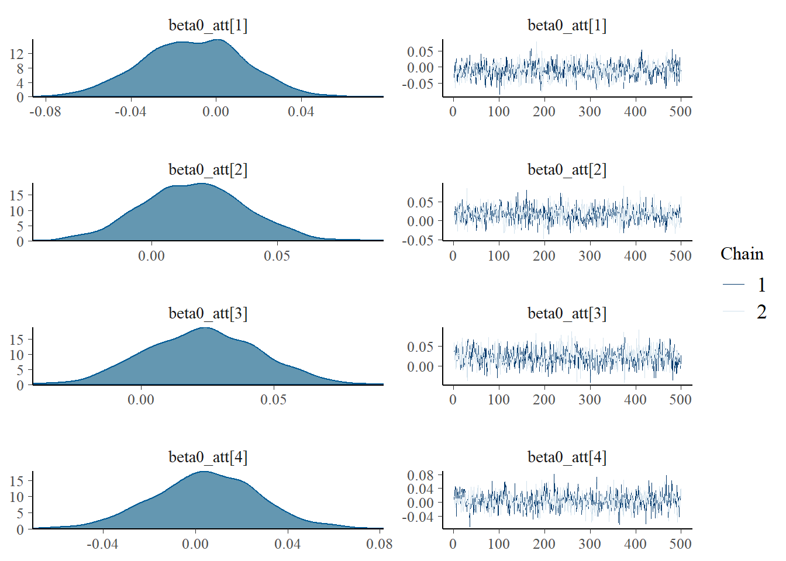
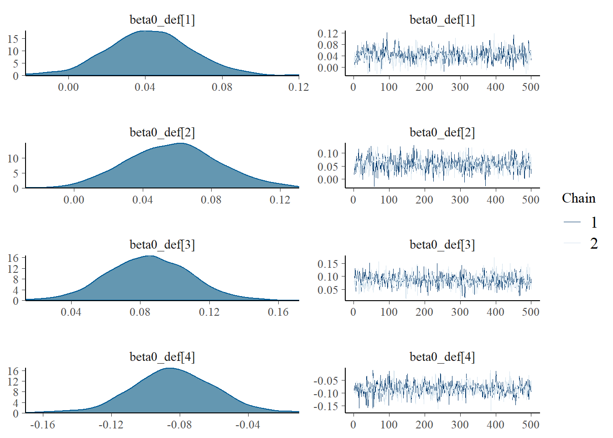
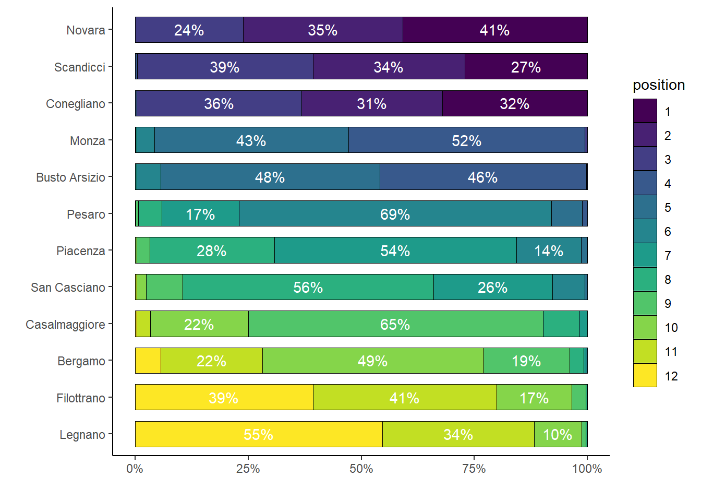
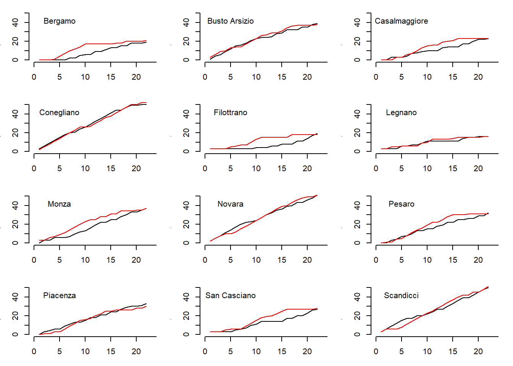

![]()
library(plyr)
library(dplyr)
library(rstan)
library(bayesplot)
library(boot)
library(ggplot2)
library(scales)
library(RColorBrewer)
library(viridis)
set.seed(12345) # for reproducibility
#load data
data<-read.csv(file = "Volley_prepro_v1.csv",header = T)
data$home.team<-as.factor(data$home.team)
data$away.team<-as.factor(data$away.team)
data$bloeff1<-(data$bloper1-data$bloinv1)/(data$blo1+data$bloper1)
data$bloeff2<-(data$bloper2-data$bloinv2)/(data$blo2+data$bloper2)
data_stat1<-ddply(data, .(h), summarise, meanatteff1=mean(atteff1),meansereff1=mean(sereff1),
meandefeff1=mean(defeff1),meanbloeff1=mean(bloeff1))
data_stat2<-ddply(data, .(a), summarise, meanatteff2=mean(atteff2),meansereff2=mean(sereff2),
meandefeff2=mean(defeff2),meanbloeff2=mean(bloeff2))
#center cov grand mean
atteff1.cen<-data$atteff1-mean(data$atteff1)
sereff1.cen<-data$sereff1-mean(data$sereff1)
bloeff1.cen<-data$bloeff1-mean(data$bloeff1)
defeff1.cen<-data$defeff1-mean(data$defeff1)
atteff2.cen<-data$atteff2-mean(data$atteff2)
sereff2.cen<-data$sereff2-mean(data$sereff2)
bloeff2.cen<-data$bloeff2-mean(data$bloeff2)
defeff2.cen<-data$defeff2-mean(data$defeff2)Generalised Linear Mixed Models (Stan)
Quarto
R
Academia
Software
Statistics
Abstract
This tutorial will focus on the use of Bayesian estimation to fit simple linear regression models …
Keywords
Software, Statistics, Stan
This tutorial will focus on the use of Bayesian estimation to fit simple linear regression models. BUGS (Bayesian inference Using Gibbs Sampling) is an algorithm and supporting language (resembling R) dedicated to performing the Gibbs sampling implementation of Markov Chain Monte Carlo (MCMC) method. Dialects of the BUGS language are implemented within three main projects:
OpenBUGS - written in component pascal.
JAGS - (Just Another Gibbs Sampler) - written in
C++.Stan - a dedicated Bayesian modelling framework written in
C++and implementing Hamiltonian MCMC samplers.
Whilst the above programs can be used stand-alone, they do offer the rich data pre-processing and graphical capabilities of R, and thus, they are best accessed from within R itself. As such there are multiple packages devoted to interfacing with the various software implementations:
R2OpenBUGS - interfaces with
OpenBUGSR2jags - interfaces with
JAGSrstan - interfaces with
Stan
This tutorial will demonstrate how to fit models in Stan (Gelman, Lee, and Guo (2015)) using the package rstan (Stan Development Team (2018)) as interface, which also requires to load some other packages.
Overview
In some respects, Generalized Linear Mixed effects Models (GLMM) are a hierarchical extension of Generalized linear models (GLM) in a similar manner that Linear Mixed effects Models (LMM) are a hierarchical extension of Linear Models (LM). However, whilst the Gaussian (normal) distribution facilitates a relatively straight way of generating the marginal likelihood of the observed response by integrating likelihoods across all possible (and unobserved) levels of a random effect to yield parameter estimates, the same cannot be said for other distributions. Consequently various approximations have been developed to estimate the fixed and random parameters for GLMM’s:
Penalized quasi-likelihood (PQL). This method approximates a quasi-likelihood by iterative fitting of (re)weighted linear mixed effects models based on the fit of GLM fit. Specifically, it estimates the fixed effects parameters by fitting a GLM that incorporates a correlation (variance-covariance) structure resulting from a LMM and then refits a LMM to re-estimate the variance-covariance structure by using the variance structure from the previous GLM. The cycle continues to iterate until either the fit improvement is below a threshold or a defined number of iterations has occurred. Whilst this is a relatively simple approach, that enables us to leverage methodologies for accommodating heterogeneity and spatial/temporal autocorrelation, it is known to perform poorly (estimates biased towards large variance) for Poisson distributions when the expected value is less than \(5\) and for binary data when the expected number of successes or failures are less than \(5\). Moreover, as it approximates quasi-likelihood rather than likelihood, likelihood based inference and information criterion methods (such as likelihood ratio tests and AIC) are not appropriate with this approach. Instead, Wald tests are required for inference.
Laplace approximation. This approach utilises a second-order Taylor series expansion to approximate (a mathematical technique for approximating the properties of a function around a point by taking multiple derivatives of the function and summing them together) the likelihood function. If we assume that the likelihood function is approximately normal and thus a quadratic function on a log scale, we can use second-order Taylor series expansion to approximate this likelihood. Whilst this approach is considered to be more accurate than PQL, it is considerably slower and unable to accommodate alternative variance and correlation structures.
Gauss-Hermite quadrature (GHQ). This approach approximates the marginal likelihood by approximating the value of integrals at specific points (quadratures). This technique can be further adapted by allowing the number of quadratures and their weights to be optimized via a set of rules.
Markov-chain Monte-Carlo (MCMC). This takes a bruit force approach by recreating the likelihood by traversing the likelihood function with sequential sampling proportional to the likelihood. Although this approach is very robust (when the posteriors have converged), they are computationally very intense. Interestingly, some (including Andrew Gelman) argue that PQL, Laplace and GHQ do not yield estimates. Rather they are only approximations of estimates. By contrast, as MCMC methods are able to integrate over all levels by bruit force, the resulting parameters are indeed true estimates.
We will focus on the last approach which is the more general among the ones considered here and which is based on a Bayesian approach, which can be very flexible and accurate, yet very slow and complex.
Hierarchical Poisson regression
The model I will be developing is a Bayesian hierarchical Poisson regression model which I used for the modelling of match results in volleyball, also available as a published paper. The objective of the analysis is to model the match results from the season 2017-2018 of Serie A1, the premium Italian female volleyball league. In total there were \(136\) games (rows) in the dataset each with information regarding which was the home and away team, what these teams scored, whether the match ended with \(4\) or \(5\) sets, and additional in-game statistics such as number of attacks, digs, serves, and blocks for each team in each match. The point outcomes of the teams in the games are assumed to be distributed according to a Poisson distribution. This model is similar to other models used for the modelling of football results, where the points scored by the home and away teams are defined as a function of latent attacking and defensive skills of the teams estimated across the games.
The peculiar (and novel) aspect of the model is that it takes into account the features of volleyball to generate plausible game results and league points scored by the teams across the season. In particular, for modelling purposes it is important to accout for the following aspects. 1) according to the current scoring system, matches are played until a team wins a total of three sets, with each set typically going to \(25\) points. However, if the two teams won two sets each, the third set then goes only up to \(15\) points. 2) a team must win each set by \(2\) points. If the score is tied with even numbers, both teams have to continue playing the set until a \(2\)-point lead is obtained. Otherwise, points keep accumulating until one team wins with a margin of victory of \(2\) points, even if the score is greater than \(25\) or \(15\) points. 3) in professional volleyball leagues, the teams get points according to set numbers at the end of all matches in the league. More specifically, the team points are awarded as follows: if the match is won \(3–0\) or \(3–1\), \(3\) points are assigned to the winner and \(0\) points to the loser; if the match is won \(3–2\), \(2\) points are assigned to the winner and \(1\) point to the loser.
The model is a Bayesian hierarchical analysis of volleyball data which allows to jointly predict match results and team rankings in national leagues. I use data from the women’s volleyball Italian Serie A1 \(2017–2018\) season as a motivating example to implement and validate the model.
Loading the data
I start by loading libraries, reading in the data and preprocessing it for Stan. In the original verison of the analysis I used JAGS and a slightly more complicated model which I do not consider here, but that you may consult in my paper if interested (Gabrio (2020)).
Data check
How are the number of points for each team in a volleyball match distributed? Well, let’s start by assuming that both teams have many chances at making a point and that each team have the same probability of scoring each point chance. Given these assumptions the distribution of the number of points for each team should be well captured by a Poisson distribution. A quick and dirty comparison between the actual distribution of the number of scored goals and a Poisson distribution having the same mean number of scored goals support this notion.
par(mfcol = c(2, 1), mar = rep(2.2, 4))
hist(c(data$y2, data$y1), xlim = c(40, 120), breaks = 8,main = "Distribution of the number of points\nscored by a team in a match.")
mean_goals <- mean(c(data$y2, data$y1))
hist(rpois(9999, mean_goals), xlim = c(40, 120), breaks = 8 ,main = "Random draw from a Poisson distribution with\nthe same mean as the distribution above.")
Model fitting
All teams aren’t equally good and it will be assumed that all teams have a latent skill variable and the skill of a team minus the skill of the opposing team defines the predicted outcome of a game. As the number of goals are assumed to be Poisson distributed it is natural that the skills of the teams are on the log scale of the mean of the distribution. The distribution of the number of goals for the home team \(i\) when facing the away team \(j\) is then
\[ \text{Points} \sim \text{Pois}(\lambda) \]
where \(\log(\lambda)=\mu + \text{home} + \text{skill}_i - \text{skill}_j\). \(\mu\) is a constant, while home is the advantage for the team hosting the game which is typically assumed to be constant for all the teams and throughout the season. The point outcome of a match between home team \(i\) and away team \(j\) is modeled as:
\[ \text{HomePoins}_{ij} \sim \text{Pois}(\lambda_{\text{home},ij}), \]
\[ \text{AwayPoints}_{ij} \sim \text{Pois}(\lambda_{\text{away},ij}), \]
where
\[ \log(\lambda_{\text{home},ij}) = \mu + \text{home} + \text{skill}_i - \text{skill}_j, \]
\[ \log(\lambda_{\text{away},ij}) = \mu + \text{skill}_j - \text{skill}_i. \]
The skill parameters for the home and away teams are specified as a function of a set of attack and defense skills, which in turn are a linear function of different in-game statistics including the number of attacks, digs, serves and blocks for each team:
\[ \text{skill}_i = \alpha_{0i} + \alpha_{1i}\text{attacks} + \alpha_{2i}\text{serves} + , \]
\[ \text{skill}_j = \beta_{0j} + \beta_{1j}\text{digs} + \beta_{2j}\text{blocks}, \]
The distribution of two indicator variables, related to whether or not the fifth set was played (\(d^s\)) and whether the home team was the winner (\(d^g\)) in each match, are also included in the model. These are modelled as:
\[ d^s \sim \text{Bernoulli}(\pi^s) \;\;\; \text{and} \;\;\; d^g \sim \text{Bernoulli}(\pi^g), \]
where the corresponding probabilities are specified as
\[ \text{logit}(\pi^s) = \gamma_{0} + \gamma_1\text{HomePoins}_{i} + \gamma_2\text{AwayPoins}_{j}, \]
\[ \text{logit}(\pi^g) = \delta_{0} + \delta_1\text{HomePoins}_{i} + \delta_2\text{AwayPoins}_{j} + \delta_3d^g. \]
I set the prior distributions over \(\mu\) and \(\text{home}\) to:
\[ \text{home} \sim N(0, 10000) \;\;\; \text{and} \;\;\; \mu \sim N(0, 10000), \]
weakly informative priors on \(\boldsymbol \gamma\), \(\boldsymbol \delta\), and set the priors on the skill of all \(n\) teams using a hierarchical approach to :
\[ \text{skill}_{1,\ldots,n} \sim N(\mu_{\text{teams}}, \sigma^2_{\text{teams}}), \]
so that teams are assumed to have similar but not identical mean and variance parameters for thier skill parameters. Turning this into a Stan model requires some minor adjustments. I have to “anchor” the sum of team skills to a constant otherwise the mean skill can drift away freely (sum to zero constraint) and the model cannot be identified. Doing these adjustments results in the following model description:
rstanString<-"
data{
int<lower=1> nteams; // number of teams
int<lower=1> ngames; // number of games
int<lower=1, upper=nteams> home_team[ngames]; // home team ID (1, ..., 12)
int<lower=1, upper=nteams> away_team[ngames]; // away team ID (1, ..., 12)
vector [ngames] att_eff1; // in game statistics for number of attacks (home)
vector [ngames] ser_eff1; // in game statistics for number of serves (home)
vector [ngames] def_eff2; // in game statistics for number of digs (away)
vector [ngames] blo_eff2; // in game statistics for number of blocks (away)
vector [ngames] att_eff2; // in game statistics for number of attacks (away)
vector [ngames] ser_eff2; // in game statistics for number of serves (away)
vector [ngames] def_eff1; // in game statistics for number of digs (home)
vector [ngames] blo_eff1; // in game statistics for number of blocks (home)
int<lower=0> y1[ngames]; // number of points scored by home team
int<lower=0> y2[ngames]; // number of points scored by away team
int<lower=0, upper=1> ds[ngames]; // indicator for number of sets played (3/4 or 5)
int<lower=0, upper=1> dg[ngames]; // indicator for winning of the match for home team
}
parameters{
real home;
real mu;
real mu0_att;
real mu0_def;
real<lower=0> sigma0_att;
real<lower=0> sigma0_def;
real mu1_att;
real mu1_def;
real<lower=0> sigma1_att;
real<lower=0> sigma1_def;
real mu1_ser;
real mu1_blo;
real<lower=0> sigma1_ser;
real<lower=0> sigma1_blo;
vector [nteams] beta0_att_star;
vector [nteams] beta1_att_star;
vector [nteams] beta1_ser_star;
vector [nteams] beta0_def_star;
vector [nteams] beta1_def_star;
vector [nteams] beta1_blo_star;
real gamma[3];
real delta[4];
}
transformed parameters{
//Trick to code the sum-to-zero constraint
vector [nteams] beta0_att;
vector [nteams] beta1_att;
vector [nteams] beta1_ser;
vector [nteams] beta0_def;
vector [nteams] beta1_def;
vector [nteams] beta1_blo;
vector<lower=0>[ngames] theta1;
vector<lower=0>[ngames] theta2;
beta0_att = beta0_att_star - mean(beta0_att_star);
beta1_att = beta1_att_star - mean(beta1_att_star);
beta1_ser = beta1_ser_star - mean(beta1_ser_star);
beta0_def = beta0_def_star - mean(beta0_def_star);
beta1_def = beta1_def_star - mean(beta1_def_star);
beta1_blo = beta1_blo_star - mean(beta1_blo_star);
for (g in 1:ngames) {
theta1[g] = exp(home + mu + beta0_att[home_team[g]] + beta1_att[home_team[g]]*att_eff1[g] + beta1_ser[home_team[g]]*ser_eff1[g] +
beta0_def[away_team[g]] + beta1_def[away_team[g]]*def_eff2[g] + beta1_blo[away_team[g]]*blo_eff2[g]);
theta2[g] = exp(mu + beta0_att[away_team[g]] + beta1_att[away_team[g]]*att_eff2[g] + beta1_ser[away_team[g]]*ser_eff2[g] +
beta0_def[home_team[g]] + beta1_def[home_team[g]]*def_eff1[g] + beta1_blo[home_team[g]]*blo_eff1[g]);
}
}
model {
//priors
home ~ normal(0, 100);
mu ~ normal(0, 100);
mu0_att ~ normal(0, 100);
mu0_def ~ normal(0, 100);
sigma0_att ~ uniform(0, 100);
sigma0_def ~ uniform(0, 100);
mu1_att ~ normal(0, 100);
mu1_def ~ normal(0, 100);
sigma1_att ~ uniform(0, 100);
sigma1_def ~ uniform(0, 100);
mu1_ser ~ normal(0, 100);
mu1_blo ~ normal(0, 100);
sigma1_ser ~ uniform(0, 100);
sigma1_blo ~ uniform(0, 100);
gamma ~ normal(0, 100);
delta ~ normal(0, 100);
beta0_att_star ~ normal(mu0_att, sigma0_att);
beta0_def_star ~ normal(mu0_def, sigma0_def);
beta1_att_star ~ normal(mu1_att, sigma1_att);
beta1_def_star ~ normal(mu1_def, sigma1_def);
beta1_ser_star ~ normal(mu1_ser, sigma1_ser);
beta1_blo_star ~ normal(mu1_blo, sigma1_blo);
// likelihood
for (g in 1:ngames) {
y1[g] ~ poisson(theta1[g]);
y2[g] ~ poisson(theta2[g]);
ds[g] ~ bernoulli_logit(gamma[1] + gamma[2]*y1[g] + gamma[3]*y2[g]);
dg[g] ~ bernoulli_logit(delta[1] + delta[2]*y1[g] + delta[3]*y2[g] + delta[4]*ds[g]);
}
}
generated quantities{
// loglikelihood
vector[ngames] loglik_y1;
vector[ngames] loglik_y2;
vector[ngames] loglik_ds;
vector[ngames] loglik_dg;
for (g in 1:ngames) {
loglik_y1[g] = poisson_lpmf(y1[g]| theta1[g]);
loglik_y2[g] = poisson_lpmf(y2[g]| theta2[g]);
loglik_ds[g] = bernoulli_logit_lpmf(ds[g]| gamma[1] + gamma[2]*y1[g] + gamma[3]*y2[g]);
loglik_dg[g] = bernoulli_logit_lpmf(dg[g]| delta[1] + delta[2]*y1[g] + delta[3]*y2[g] + delta[4]*ds[g]);
}
}
"
## write the model to a text file
writeLines(rstanString, con = "Modelbasic.stan")Next, we put the data into a list to be passed to Stan, define the nodes (parameters and derivatives) to monitor and the chain parameters.
#prepare data
y1<-data$y1
y2<-data$y2
ngames<-max(data$Game)
nteams<-max(data$h)
home_team<-data$h
away_team<-data$a
att_eff1<-data$atteff1
att_eff2<-data$atteff2
ser_eff1<-data$sereff1
ser_eff2<-data$sereff2
blo_eff1<-data$bloeff1
blo_eff2<-data$bloeff2
def_eff1<-data$defeff1
def_eff2<-data$defeff2
att_eff1<-atteff1.cen
att_eff2<-atteff2.cen
ser_eff1<-sereff1.cen
ser_eff2<-sereff2.cen
blo_eff1<-bloeff1.cen
blo_eff2<-bloeff2.cen
def_eff1<-defeff1.cen
def_eff2<-defeff2.cen
ds<-ifelse(data$settot==5,1,0)
dg<-ifelse(data$set1>data$set2,1,0)
#pre-processing
datalist <- list(y1=y1,y2=y2,ngames=ngames,nteams=nteams,home_team=home_team,away_team=away_team,att_eff1=att_eff1,att_eff2=att_eff2,def_eff1=def_eff1,def_eff2=def_eff2,ser_eff1=ser_eff1,ser_eff2=ser_eff2,blo_eff1=blo_eff1,blo_eff2=blo_eff2,ds=ds, dg=dg)
params <- c("mu","home","gamma","delta","beta0_att","beta0_def",
"beta1_att","beta1_def","beta1_ser","beta1_blo","theta1",
"theta2","loglik_y1","loglik_y2","loglik_ds","loglik_dg")
burnInSteps = 500
nChains = 2
numSavedSteps = 2000
thinSteps = 1
nIter = ceiling((numSavedSteps * thinSteps)/nChains)Start the Stan model (check the model, load data into the model, specify the number of chains and compile the model). Run the Stan code via the rstan package and the stan function.
model_stan<- stan(data = datalist, file = "Modelbasic.stan",
chains = nChains, pars = params, iter = nIter,
warmup = burnInSteps, thin = thinSteps)NA
NA SAMPLING FOR MODEL 'anon_model' NOW (CHAIN 1).
NA Chain 1:
NA Chain 1: Gradient evaluation took 0.000182 seconds
NA Chain 1: 1000 transitions using 10 leapfrog steps per transition would take 1.82 seconds.
NA Chain 1: Adjust your expectations accordingly!
NA Chain 1:
NA Chain 1:
NA Chain 1: Iteration: 1 / 1000 [ 0%] (Warmup)
NA Chain 1: Iteration: 100 / 1000 [ 10%] (Warmup)
NA Chain 1: Iteration: 200 / 1000 [ 20%] (Warmup)
NA Chain 1: Iteration: 300 / 1000 [ 30%] (Warmup)
NA Chain 1: Iteration: 400 / 1000 [ 40%] (Warmup)
NA Chain 1: Iteration: 500 / 1000 [ 50%] (Warmup)
NA Chain 1: Iteration: 501 / 1000 [ 50%] (Sampling)
NA Chain 1: Iteration: 600 / 1000 [ 60%] (Sampling)
NA Chain 1: Iteration: 700 / 1000 [ 70%] (Sampling)
NA Chain 1: Iteration: 800 / 1000 [ 80%] (Sampling)
NA Chain 1: Iteration: 900 / 1000 [ 90%] (Sampling)
NA Chain 1: Iteration: 1000 / 1000 [100%] (Sampling)
NA Chain 1:
NA Chain 1: Elapsed Time: 62.452 seconds (Warm-up)
NA Chain 1: 67.426 seconds (Sampling)
NA Chain 1: 129.878 seconds (Total)
NA Chain 1:
NA
NA SAMPLING FOR MODEL 'anon_model' NOW (CHAIN 2).
NA Chain 2:
NA Chain 2: Gradient evaluation took 0.00014 seconds
NA Chain 2: 1000 transitions using 10 leapfrog steps per transition would take 1.4 seconds.
NA Chain 2: Adjust your expectations accordingly!
NA Chain 2:
NA Chain 2:
NA Chain 2: Iteration: 1 / 1000 [ 0%] (Warmup)
NA Chain 2: Iteration: 100 / 1000 [ 10%] (Warmup)
NA Chain 2: Iteration: 200 / 1000 [ 20%] (Warmup)
NA Chain 2: Iteration: 300 / 1000 [ 30%] (Warmup)
NA Chain 2: Iteration: 400 / 1000 [ 40%] (Warmup)
NA Chain 2: Iteration: 500 / 1000 [ 50%] (Warmup)
NA Chain 2: Iteration: 501 / 1000 [ 50%] (Sampling)
NA Chain 2: Iteration: 600 / 1000 [ 60%] (Sampling)
NA Chain 2: Iteration: 700 / 1000 [ 70%] (Sampling)
NA Chain 2: Iteration: 800 / 1000 [ 80%] (Sampling)
NA Chain 2: Iteration: 900 / 1000 [ 90%] (Sampling)
NA Chain 2: Iteration: 1000 / 1000 [100%] (Sampling)
NA Chain 2:
NA Chain 2: Elapsed Time: 61.322 seconds (Warm-up)
NA Chain 2: 75.791 seconds (Sampling)
NA Chain 2: 137.113 seconds (Total)
NA Chain 2:print(model_stan, pars =c("mu","home","gamma","delta","beta0_att",
"beta0_def","beta1_att","beta1_def",
"beta1_ser","beta1_blo"))NA Inference for Stan model: anon_model.
NA 2 chains, each with iter=1000; warmup=500; thin=1;
NA post-warmup draws per chain=500, total post-warmup draws=1000.
NA
NA mean se_mean sd 2.5% 25% 50% 75% 97.5% n_eff
NA mu 4.44 0.00 0.01 4.42 4.43 4.44 4.45 4.47 75
NA home 0.03 0.00 0.02 0.00 0.02 0.03 0.05 0.06 55
NA gamma[1] -111.64 8.40 37.84 -204.58 -129.36 -102.85 -85.91 -58.49 20
NA gamma[2] 0.59 0.05 0.25 0.22 0.41 0.54 0.71 1.19 23
NA gamma[3] 0.56 0.04 0.18 0.29 0.42 0.53 0.67 0.96 25
NA delta[1] -12.56 0.98 5.61 -23.44 -16.21 -12.60 -8.90 -1.70 33
NA delta[2] 0.48 0.02 0.11 0.30 0.41 0.48 0.56 0.73 36
NA delta[3] -0.34 0.01 0.07 -0.49 -0.38 -0.33 -0.29 -0.21 61
NA delta[4] -3.28 0.24 1.49 -6.06 -4.34 -3.26 -2.27 -0.47 40
NA beta0_att[1] -0.01 0.00 0.02 -0.06 -0.03 -0.01 0.01 0.03 954
NA beta0_att[2] 0.02 0.00 0.02 -0.02 0.00 0.02 0.03 0.06 1000
NA beta0_att[3] 0.02 0.00 0.02 -0.02 0.01 0.02 0.04 0.06 931
NA beta0_att[4] 0.00 0.00 0.02 -0.04 -0.01 0.00 0.02 0.05 949
NA beta0_att[5] -0.07 0.00 0.03 -0.13 -0.09 -0.07 -0.06 -0.02 682
NA beta0_att[6] -0.09 0.00 0.03 -0.14 -0.11 -0.09 -0.07 -0.04 717
NA beta0_att[7] 0.03 0.00 0.02 -0.02 0.01 0.03 0.04 0.08 985
NA beta0_att[8] 0.14 0.00 0.03 0.08 0.12 0.14 0.16 0.21 361
NA beta0_att[9] -0.05 0.00 0.02 -0.10 -0.07 -0.05 -0.04 -0.01 780
NA beta0_att[10] 0.01 0.00 0.02 -0.04 -0.01 0.01 0.03 0.06 793
NA beta0_att[11] -0.01 0.00 0.03 -0.07 -0.03 -0.01 0.00 0.04 1008
NA beta0_att[12] 0.02 0.00 0.03 -0.04 0.00 0.02 0.04 0.08 821
NA beta0_def[1] 0.04 0.00 0.02 0.00 0.03 0.04 0.06 0.09 740
NA beta0_def[2] 0.06 0.00 0.03 0.01 0.04 0.06 0.08 0.11 835
NA beta0_def[3] 0.08 0.00 0.02 0.04 0.07 0.08 0.10 0.13 951
NA beta0_def[4] -0.08 0.00 0.02 -0.13 -0.10 -0.08 -0.07 -0.03 759
NA beta0_def[5] 0.03 0.00 0.02 -0.02 0.01 0.03 0.05 0.08 668
NA beta0_def[6] 0.01 0.00 0.02 -0.03 0.00 0.02 0.03 0.06 1086
NA beta0_def[7] 0.05 0.00 0.03 0.00 0.03 0.05 0.07 0.10 782
NA beta0_def[8] -0.01 0.00 0.03 -0.06 -0.02 -0.01 0.01 0.05 745
NA beta0_def[9] -0.03 0.00 0.02 -0.08 -0.05 -0.03 -0.02 0.01 850
NA beta0_def[10] 0.03 0.00 0.02 -0.02 0.02 0.03 0.05 0.08 909
NA beta0_def[11] 0.01 0.00 0.03 -0.04 -0.01 0.01 0.03 0.06 995
NA beta0_def[12] -0.20 0.00 0.03 -0.27 -0.22 -0.20 -0.17 -0.13 216
NA beta1_att[1] 0.39 0.01 0.38 -0.38 0.15 0.39 0.63 1.12 972
NA beta1_att[2] -0.87 0.01 0.38 -1.64 -1.13 -0.86 -0.62 -0.17 1045
NA beta1_att[3] 0.32 0.01 0.35 -0.32 0.07 0.30 0.55 1.05 920
NA beta1_att[4] 0.20 0.01 0.36 -0.47 -0.04 0.20 0.43 0.91 954
NA beta1_att[5] -0.17 0.02 0.39 -0.93 -0.42 -0.17 0.07 0.65 673
NA beta1_att[6] 0.95 0.01 0.35 0.26 0.72 0.96 1.18 1.64 705
NA beta1_att[7] -0.54 0.02 0.49 -1.52 -0.88 -0.53 -0.22 0.50 895
NA beta1_att[8] -2.14 0.03 0.57 -3.33 -2.52 -2.11 -1.77 -1.10 330
NA beta1_att[9] 0.79 0.01 0.32 0.15 0.57 0.79 1.02 1.41 939
NA beta1_att[10] 0.05 0.02 0.42 -0.79 -0.22 0.04 0.34 0.89 768
NA beta1_att[11] 1.17 0.01 0.36 0.46 0.92 1.17 1.42 1.83 897
NA beta1_att[12] -0.16 0.00 0.05 -0.25 -0.19 -0.15 -0.12 -0.06 729
NA beta1_def[1] 0.12 0.01 0.17 -0.20 0.00 0.11 0.22 0.45 894
NA beta1_def[2] 0.02 0.00 0.13 -0.24 -0.06 0.03 0.11 0.29 814
NA beta1_def[3] 0.00 0.00 0.14 -0.27 -0.09 0.01 0.09 0.28 834
NA beta1_def[4] 0.29 0.01 0.17 -0.06 0.17 0.29 0.40 0.64 317
NA beta1_def[5] 0.07 0.01 0.17 -0.25 -0.04 0.06 0.18 0.41 466
NA beta1_def[6] 0.04 0.01 0.17 -0.28 -0.07 0.03 0.15 0.35 990
NA beta1_def[7] -0.18 0.01 0.20 -0.60 -0.31 -0.17 -0.05 0.20 479
NA beta1_def[8] -0.71 0.02 0.17 -1.01 -0.83 -0.72 -0.61 -0.37 92
NA beta1_def[9] -0.07 0.01 0.15 -0.35 -0.18 -0.06 0.03 0.23 866
NA beta1_def[10] 0.03 0.01 0.14 -0.26 -0.05 0.03 0.13 0.30 696
NA beta1_def[11] -0.01 0.01 0.14 -0.29 -0.11 -0.01 0.09 0.28 804
NA beta1_def[12] 0.40 0.01 0.15 0.11 0.29 0.39 0.49 0.70 194
NA beta1_ser[1] 0.13 0.02 0.50 -0.80 -0.20 0.12 0.43 1.15 956
NA beta1_ser[2] 0.49 0.02 0.51 -0.48 0.15 0.46 0.82 1.53 815
NA beta1_ser[3] 0.72 0.02 0.48 -0.20 0.39 0.71 1.03 1.67 474
NA beta1_ser[4] -0.65 0.01 0.43 -1.50 -0.92 -0.64 -0.36 0.20 884
NA beta1_ser[5] 1.27 0.02 0.44 0.39 0.97 1.26 1.57 2.18 569
NA beta1_ser[6] -0.39 0.02 0.61 -1.57 -0.78 -0.42 0.00 0.83 883
NA beta1_ser[7] -0.88 0.03 0.60 -2.13 -1.27 -0.87 -0.45 0.24 432
NA beta1_ser[8] 0.00 0.02 0.54 -1.06 -0.35 -0.01 0.35 1.06 879
NA beta1_ser[9] -0.05 0.02 0.47 -0.92 -0.37 -0.07 0.28 0.93 951
NA beta1_ser[10] -0.60 0.02 0.49 -1.61 -0.90 -0.58 -0.27 0.37 771
NA beta1_ser[11] 0.99 0.02 0.52 -0.01 0.63 0.99 1.35 1.99 526
NA beta1_ser[12] -1.03 0.02 0.46 -1.99 -1.33 -1.02 -0.71 -0.17 685
NA beta1_blo[1] -0.02 0.00 0.09 -0.20 -0.08 -0.02 0.05 0.17 981
NA beta1_blo[2] -0.21 0.01 0.12 -0.45 -0.28 -0.20 -0.12 0.00 404
NA beta1_blo[3] -0.02 0.00 0.06 -0.14 -0.06 -0.02 0.02 0.10 856
NA beta1_blo[4] -0.04 0.00 0.06 -0.17 -0.08 -0.04 0.00 0.08 1037
NA beta1_blo[5] 0.16 0.00 0.10 -0.02 0.09 0.15 0.23 0.36 586
NA beta1_blo[6] 0.01 0.00 0.06 -0.10 -0.03 0.01 0.05 0.12 1100
NA beta1_blo[7] 0.08 0.00 0.07 -0.05 0.04 0.08 0.13 0.23 734
NA beta1_blo[8] -0.09 0.00 0.11 -0.30 -0.16 -0.09 -0.01 0.11 922
NA beta1_blo[9] -0.15 0.00 0.08 -0.32 -0.21 -0.15 -0.10 0.00 773
NA beta1_blo[10] -0.03 0.00 0.05 -0.14 -0.07 -0.03 0.01 0.08 968
NA beta1_blo[11] -0.01 0.00 0.09 -0.19 -0.07 -0.01 0.05 0.16 993
NA beta1_blo[12] 0.31 0.01 0.12 0.09 0.23 0.30 0.39 0.57 263
NA Rhat
NA mu 1.02
NA home 1.02
NA gamma[1] 1.05
NA gamma[2] 1.03
NA gamma[3] 1.06
NA delta[1] 1.01
NA delta[2] 1.01
NA delta[3] 1.03
NA delta[4] 1.01
NA beta0_att[1] 1.00
NA beta0_att[2] 1.00
NA beta0_att[3] 1.00
NA beta0_att[4] 1.00
NA beta0_att[5] 1.00
NA beta0_att[6] 1.00
NA beta0_att[7] 1.00
NA beta0_att[8] 1.00
NA beta0_att[9] 1.00
NA beta0_att[10] 1.00
NA beta0_att[11] 1.00
NA beta0_att[12] 1.00
NA beta0_def[1] 1.00
NA beta0_def[2] 1.00
NA beta0_def[3] 1.00
NA beta0_def[4] 1.00
NA beta0_def[5] 1.00
NA beta0_def[6] 1.00
NA beta0_def[7] 1.00
NA beta0_def[8] 1.00
NA beta0_def[9] 1.00
NA beta0_def[10] 1.00
NA beta0_def[11] 1.00
NA beta0_def[12] 1.00
NA beta1_att[1] 1.00
NA beta1_att[2] 1.00
NA beta1_att[3] 1.00
NA beta1_att[4] 1.00
NA beta1_att[5] 1.00
NA beta1_att[6] 1.00
NA beta1_att[7] 1.00
NA beta1_att[8] 1.00
NA beta1_att[9] 1.00
NA beta1_att[10] 1.00
NA beta1_att[11] 1.00
NA beta1_att[12] 1.00
NA beta1_def[1] 1.00
NA beta1_def[2] 1.00
NA beta1_def[3] 1.00
NA beta1_def[4] 1.01
NA beta1_def[5] 1.00
NA beta1_def[6] 1.00
NA beta1_def[7] 1.01
NA beta1_def[8] 1.03
NA beta1_def[9] 1.00
NA beta1_def[10] 1.00
NA beta1_def[11] 1.00
NA beta1_def[12] 1.01
NA beta1_ser[1] 1.00
NA beta1_ser[2] 1.00
NA beta1_ser[3] 1.00
NA beta1_ser[4] 1.00
NA beta1_ser[5] 1.01
NA beta1_ser[6] 1.00
NA beta1_ser[7] 1.00
NA beta1_ser[8] 1.00
NA beta1_ser[9] 1.00
NA beta1_ser[10] 1.00
NA beta1_ser[11] 1.01
NA beta1_ser[12] 1.00
NA beta1_blo[1] 1.00
NA beta1_blo[2] 1.00
NA beta1_blo[3] 1.00
NA beta1_blo[4] 1.00
NA beta1_blo[5] 1.00
NA beta1_blo[6] 1.00
NA beta1_blo[7] 1.00
NA beta1_blo[8] 1.00
NA beta1_blo[9] 1.00
NA beta1_blo[10] 1.00
NA beta1_blo[11] 1.00
NA beta1_blo[12] 1.00
NA
NA Samples were drawn using NUTS(diag_e) at Mon Jul 22 14:06:07 2024.
NA For each parameter, n_eff is a crude measure of effective sample size,
NA and Rhat is the potential scale reduction factor on split chains (at
NA convergence, Rhat=1).The diagnostic results are not perfect, perhaps I should run the algorithm a bit longer to get better results as a total of \(1000\) iterations does not seem enough. Here I do not bother to save time. To get an idea about posterior results I can plot at the average marginal mean offensive and defensive skills for each of the \(12\) teams in the league using the following code.
#plot att vs def effext by team
model_stan_par<-extract(model_stan)
beta0.att<-apply(model_stan_par$beta0_att, 2, mean)
beta0.def<-apply(model_stan_par$beta0_def, 2, mean)
names<-unique(data.frame(data$home.team,data$h)[order(data$h),][,1])
plot(beta0.att,beta0.def, main = "", type = "n", xlab = "Mean attack effect", ylab = "Mean defence effect", xlim=c(-0.13,0.08), ylim=c(-0.18,0.1))
points(beta0.att,beta0.def, pch=16, col="red",cex = 1.2)
abline(v=0)
abline(h=0)
text(beta0.att,beta0.def,names,cex = 0.8, adj = c(0.4,1.3))
Different clusters of teams can be easily detected and suggest a different performance of the teams based on their average offensive and defensive skills. Those associated with higher offensive (to the right) and lower defensive (to the bottom) effects are the ones with the best performance across the season.
MCMC diagnostics
Using the generated MCMC samples I can now look at some diagnostic measures. For example, we can assess convergence of the chains using the function mcmc_combo in the package bayesplot which provides a summary of convergence diagnostics using different graphics. We consider the marginal skill parameters for four teams to give an example.
mcmc_combo(model_stan, pars=c("beta0_att[1]","beta0_att[2]",
"beta0_att[3]","beta0_att[4]"))
mcmc_combo(model_stan, pars=c("beta0_def[1]","beta0_def[2]",
"beta0_def[3]","beta0_def[4]"))
Model validation
We can finally assess the fit of the model to the data by computing posterior predictive checks, where we use the posterior values of the parameters to sample a large number of replications for the data. We then use these to generate different types of results and compare them with the actual results to detect possible misfits of the model.
#obtain parameters to generate replications
y1.pred<-y2.pred<-matrix(NA,length(model_stan_par$home),132)
ds.pred<-dg.pred<-matrix(NA,length(model_stan_par$home),132)
pi.s<-pi.g<-matrix(NA,length(model_stan_par$home),132)
y1.mat<-y2.mat<-ds.mat<-matrix(NA,length(model_stan_par$home),132)
for(i in 1:length(model_stan_par$home)){
y1.mat[i,]<-y1
y2.mat[i,]<-y2
ds.mat[i,]<-ds
pi.s[i,]<-inv.logit(model_stan_par$gamma[i,1] + model_stan_par$gamma[i,2]*y1.mat[i,] + model_stan_par$gamma[i,3]*y2.mat[i,])
pi.g[i,]<-inv.logit(model_stan_par$delta[i,1] + model_stan_par$delta[i,2]*y1.mat[i,] + model_stan_par$delta[i,3]*y2.mat[i,] + model_stan_par$delta[i,4]*ds.mat[i,])
}
#generate predictions
set.seed(3456)
for(i in 1:length(model_stan_par$home)){
y1.pred[i,]<-rpois(n=132,lambda = model_stan_par$theta1[i,])
y2.pred[i,]<-rpois(n=132,lambda = model_stan_par$theta2[i,])
ds.pred[i,]<-rbinom(n=132, size = 1,prob = pi.s[i,])
dg.pred[i,]<-rbinom(n=132, size = 1,prob = pi.g[i,])
}
#compute prediction points
results<-list()
for(i in 1:1000){
results[[i]]<-data.frame(y1.pred[i,],y2.pred[i,],ds.pred[i,],dg.pred[i,],data$h,data$a)
results[[i]]$points.home<-ifelse(results[[i]]$ds.pred.i...==0 & results[[i]]$dg.pred.i...==1,3,0)
results[[i]]$points.home<-ifelse(results[[i]]$ds.pred.i...==1 & results[[i]]$dg.pred.i...==1,2,results[[i]]$points.home)
results[[i]]$points.home<-ifelse(results[[i]]$ds.pred.i...==1 & results[[i]]$dg.pred.i...==0,1,results[[i]]$points.home)
results[[i]]$points.away<-ifelse(results[[i]]$ds.pred.i...==0 & results[[i]]$dg.pred.i...==0,3,0)
results[[i]]$points.away<-ifelse(results[[i]]$ds.pred.i...==1 & results[[i]]$dg.pred.i...==0,2,results[[i]]$points.away)
results[[i]]$points.away<-ifelse(results[[i]]$ds.pred.i...==1 & results[[i]]$dg.pred.i...==1,1,results[[i]]$points.away)
}
#compare results for scores by team
tot.y1.list<-tot.y2.list<-list()
for(i in 1:1000){
tot.y1.list[[i]]<-ddply(results[[i]], .(data.h), summarise, totscorehome=sum(y1.pred.i...))
tot.y2.list[[i]]<-ddply(results[[i]], .(data.a), summarise, totscoreaway=sum(y2.pred.i...))
}
tot.y1.list.neg<-tot.y2.list.neg<-list()
for(i in 1:1000){
tot.y1.list.neg[[i]]<-ddply(results[[i]], .(data.h), summarise, totscorehomeneg=sum(y2.pred.i...))
tot.y2.list.neg[[i]]<-ddply(results[[i]], .(data.a), summarise, totscoreawayneg=sum(y1.pred.i...))
}
tot.y1.list.mat<-tot.y2.list.mat<-matrix(NA,1000,12)
tot.y1.list.neg.mat<-tot.y2.list.neg.mat<-matrix(NA,1000,12)
for(i in 1:1000){
tot.y1.list.mat[i,]<-tot.y1.list[[i]][,2]
tot.y2.list.mat[i,]<-tot.y2.list[[i]][,2]
tot.y1.list.neg.mat[i,]<-tot.y1.list.neg[[i]][,2]
tot.y2.list.neg.mat[i,]<-tot.y2.list.neg[[i]][,2]
}
tot.y1.obs<-ddply(data, .(h), summarise, totscorehomeobs=sum(y1))
tot.y2.obs<-ddply(data, .(a), summarise, totscorehomeobs=sum(y2))
tot.y1.obs.neg<-ddply(data, .(h), summarise, totscorehomeobs=sum(y2))
tot.y2.obs.neg<-ddply(data, .(a), summarise, totscorehomeobs=sum(y1))
#compute prediction points
results<-list()
for(i in 1:1000){
results[[i]]<-data.frame(y1.pred[i,],y2.pred[i,],ds.pred[i,],dg.pred[i,],data$h,data$a)
results[[i]]$points.home<-ifelse(results[[i]]$ds.pred.i...==0 & results[[i]]$dg.pred.i...==1,3,0)
results[[i]]$points.home<-ifelse(results[[i]]$ds.pred.i...==1 & results[[i]]$dg.pred.i...==1,2,results[[i]]$points.home)
results[[i]]$points.home<-ifelse(results[[i]]$ds.pred.i...==1 & results[[i]]$dg.pred.i...==0,1,results[[i]]$points.home)
results[[i]]$points.away<-ifelse(results[[i]]$ds.pred.i...==0 & results[[i]]$dg.pred.i...==0,3,0)
results[[i]]$points.away<-ifelse(results[[i]]$ds.pred.i...==1 & results[[i]]$dg.pred.i...==0,2,results[[i]]$points.away)
results[[i]]$points.away<-ifelse(results[[i]]$ds.pred.i...==1 & results[[i]]$dg.pred.i...==1,1,results[[i]]$points.away)
}
#compare results for scores by team
tot.y1.list<-tot.y2.list<-list()
for(i in 1:1000){
tot.y1.list[[i]]<-ddply(results[[i]], .(data.h), summarise, totscorehome=sum(y1.pred.i...))
tot.y2.list[[i]]<-ddply(results[[i]], .(data.a), summarise, totscoreaway=sum(y2.pred.i...))
}
tot.y1.list.neg<-tot.y2.list.neg<-list()
for(i in 1:1000){
tot.y1.list.neg[[i]]<-ddply(results[[i]], .(data.h), summarise, totscorehomeneg=sum(y2.pred.i...))
tot.y2.list.neg[[i]]<-ddply(results[[i]], .(data.a), summarise, totscoreawayneg=sum(y1.pred.i...))
}
tot.y1.list.mat<-tot.y2.list.mat<-matrix(NA,1000,12)
tot.y1.list.neg.mat<-tot.y2.list.neg.mat<-matrix(NA,1000,12)
for(i in 1:1000){
tot.y1.list.mat[i,]<-tot.y1.list[[i]][,2]
tot.y2.list.mat[i,]<-tot.y2.list[[i]][,2]
tot.y1.list.neg.mat[i,]<-tot.y1.list.neg[[i]][,2]
tot.y2.list.neg.mat[i,]<-tot.y2.list.neg[[i]][,2]
}
tot.y1.obs<-ddply(data, .(h), summarise, totscorehomeobs=sum(y1))
tot.y2.obs<-ddply(data, .(a), summarise, totscorehomeobs=sum(y2))
tot.y1.obs.neg<-ddply(data, .(h), summarise, totscorehomeobs=sum(y2))
tot.y2.obs.neg<-ddply(data, .(a), summarise, totscorehomeobs=sum(y1))
#scored
tot.y.obs<-tot.y1.obs[,2]+tot.y2.obs[,2]
tot.y.pred<-apply(tot.y1.list.mat,2,median)+apply(tot.y2.list.mat,2,median)
res.y<-cbind(tot.y.obs,tot.y.pred)
rownames(res.y)<-names
res.y<-round(res.y,digits = 0)
#conceded
tot.y.obs.neg<-tot.y1.obs.neg[,2]+tot.y2.obs.neg[,2]
tot.y.pred.neg<-apply(tot.y1.list.neg.mat,2,median)+apply(tot.y2.list.neg.mat,2,median)
res.y.neg<-cbind(tot.y.obs.neg,tot.y.pred.neg)
rownames(res.y.neg)<-names
res.y.neg<-round(res.y.neg,digits = 0)
#compare results for points
data.points.list<-list()
for(i in 1:1000){
data.points.list[[i]]<-data.frame(data$Game)
data.points.list[[i]]$Game<-data$Game
data.points.list[[i]]$h<-data$h
data.points.list[[i]]$a<-data$a
data.points.list[[i]]$points.home<-results[[i]]$points.home
data.points.list[[i]]$points.away<-results[[i]]$points.away
}
tot.home.list<-tot.away.list<-tot.team.list<-list()
for(i in 1:1000){
tot.home.list[[i]]<-ddply(data.points.list[[i]], .(h), summarise, totpointhome=sum(points.home))
tot.away.list[[i]]<-ddply(data.points.list[[i]], .(a), summarise, totpointaway=sum(points.away))
}
for(i in 1:1000){
tot.team.list[[i]]<-data.frame(levels(data$home.team), tot.home.list[[i]]$h)
tot.team.list[[i]]$tot.team<-tot.home.list[[i]]$totpointhome + tot.away.list[[i]]$totpointaway
tot.team.list[[i]]$true.team<-c(19, 39, 23, 50, 19, 11, 37, 51, 32, 33, 27, 50)
tot.team.list[[i]]<-tot.team.list[[i]][order(tot.team.list[[i]]$tot.team, decreasing = TRUE),]
tot.team.list[[i]]$rank<-rep(1:12)
}
#plot total scores by team
tot.scores<-matrix(NA,1000,12)
colnames(tot.scores)<-names
for(i in 1:1000){
for(j in 1:12){
tot.scores[i,j]<-tot.team.list[[i]]$tot.team[tot.team.list[[i]]$tot.home.list..i...h==j]
}
}
tot.scores.obs<-c(19, 39, 23, 50, 19, 11, 37, 51, 32, 33, 27, 50)
tot.scores.med<-apply(tot.scores, 2, median)
tot.scores.final<-cbind(tot.scores.obs,tot.scores.med)
#plot total wins
tot.wins<-matrix(NA,1000,12)
colnames(tot.wins)<-names
for(i in 1:1000){
for(j in 1:12){
tot.wins[i,j]<-length(data.points.list[[i]]$points.home[data.points.list[[i]]$points.home>1 &
data.points.list[[i]]$h==j]) + length(data.points.list[[i]]$points.away[data.points.list[[i]]$points.away>1 &
data.points.list[[i]]$a==j])
}
}
tot.wins.obs<-c(7,12,6,17,7,5,13,17,10,12,8,18)
tot.wins.prop<-tot.wins/22
tot.wins.obs.prop<-tot.wins.obs/22
tot.wins.med<-apply(tot.wins, 2, median)
tot.wins.final<-cbind(tot.wins.obs,tot.wins.med)Here, for each team, we compare the predicted and observed total number of points scored in the matches, the number of won/lost matches, and the league points scored based on a replicated and the original season results.
#summarise pred results
res.final.obs<-cbind(res.y[,1],res.y.neg[,1],tot.wins.final[,1],tot.scores.final[,1])
res.final.pred<-cbind(res.y[,2],res.y.neg[,2],tot.wins.final[,2],tot.scores.final[,2])
res.final<-cbind(res.final.obs,res.final.pred)
colnames(res.final)<-c("scored","conc'd","wins","points","scored","conc'd","wins","points")
knitr::kable(res.final, "pandoc", align = "c")| scored | conc’d | wins | points | scored | conc’d | wins | points | |
|---|---|---|---|---|---|---|---|---|
| Bergamo | 1848 | 2025 | 7 | 19 | 1846 | 2019 | 7 | 20 |
| Busto Arsizio | 1999 | 1927 | 12 | 39 | 1996 | 1918 | 12 | 37 |
| Casalmaggiore | 1922 | 2051 | 6 | 23 | 1914 | 2035 | 7 | 23 |
| Conegliano | 1960 | 1696 | 17 | 50 | 1958 | 1704 | 18 | 50 |
| Filottrano | 1781 | 1961 | 7 | 19 | 1799 | 1955 | 6 | 18 |
| Legnano | 1642 | 1903 | 5 | 11 | 1662 | 1902 | 4 | 17 |
| Monza | 2003 | 1943 | 13 | 37 | 1999 | 1936 | 13 | 38 |
| Novara | 1987 | 1776 | 17 | 51 | 1954 | 1774 | 17 | 51 |
| Pesaro | 1776 | 1820 | 10 | 32 | 1786 | 1823 | 11 | 33 |
| Piacenza | 1888 | 1939 | 12 | 33 | 1887 | 1934 | 9 | 30 |
| San Casciano | 1807 | 1881 | 8 | 27 | 1808 | 1878 | 9 | 29 |
| Scandicci | 1865 | 1556 | 18 | 50 | 1862 | 1583 | 18 | 51 |
Predicted results (the last four columns in the table) are not so bad, especially when looking at the number of league points scored by the teams between the replicated and observed season which are quite similar. These results suggest that the model seems to predict in a reasonable way the league results. To further assess this aspect, we consider two plots. The first compares the ranking of the teams across a large number of replications of the season based on the number of wins, losses and league points gained for each team.
#summarise pred results
res.matrix<-matrix(NA,length(tot.team.list),12)
colnames(res.matrix)<-names
for(i in 1:1000){
res.matrix[i,1]<-tot.team.list[[i]]$rank[tot.team.list[[i]]$tot.home.list..i...h==1]
res.matrix[i,2]<-tot.team.list[[i]]$rank[tot.team.list[[i]]$tot.home.list..i...h==2]
res.matrix[i,3]<-tot.team.list[[i]]$rank[tot.team.list[[i]]$tot.home.list..i...h==3]
res.matrix[i,4]<-tot.team.list[[i]]$rank[tot.team.list[[i]]$tot.home.list..i...h==4]
res.matrix[i,5]<-tot.team.list[[i]]$rank[tot.team.list[[i]]$tot.home.list..i...h==5]
res.matrix[i,6]<-tot.team.list[[i]]$rank[tot.team.list[[i]]$tot.home.list..i...h==6]
res.matrix[i,7]<-tot.team.list[[i]]$rank[tot.team.list[[i]]$tot.home.list..i...h==7]
res.matrix[i,8]<-tot.team.list[[i]]$rank[tot.team.list[[i]]$tot.home.list..i...h==8]
res.matrix[i,9]<-tot.team.list[[i]]$rank[tot.team.list[[i]]$tot.home.list..i...h==9]
res.matrix[i,10]<-tot.team.list[[i]]$rank[tot.team.list[[i]]$tot.home.list..i...h==10]
res.matrix[i,11]<-tot.team.list[[i]]$rank[tot.team.list[[i]]$tot.home.list..i...h==11]
res.matrix[i,12]<-tot.team.list[[i]]$rank[tot.team.list[[i]]$tot.home.list..i...h==12]
}
#create stacked barplot of results
data.barplot<-data.frame(rep(1:c(1000*12)))
names(data.barplot)<-c("Game")
data.barplot$position<-as.factor(c(res.matrix[,1],res.matrix[,2],res.matrix[,3],res.matrix[,4],
res.matrix[,5],res.matrix[,6],res.matrix[,7],res.matrix[,8],
res.matrix[,9],res.matrix[,10],res.matrix[,11],res.matrix[,12]))
data.barplot$team<-rep(NA,1000*12)
data.barplot$team[1:1000]<-rep(paste(names[1]),1000)
data.barplot$team[1001:2000]<-rep(paste(names[2]),1000)
data.barplot$team[2001:3000]<-rep(paste(names[3]),1000)
data.barplot$team[3001:4000]<-rep(paste(names[4]),1000)
data.barplot$team[4001:5000]<-rep(paste(names[5]),1000)
data.barplot$team[5001:6000]<-rep(paste(names[6]),1000)
data.barplot$team[6001:7000]<-rep(paste(names[7]),1000)
data.barplot$team[7001:8000]<-rep(paste(names[8]),1000)
data.barplot$team[8001:9000]<-rep(paste(names[9]),1000)
data.barplot$team[9001:10000]<-rep(paste(names[10]),1000)
data.barplot$team[10001:11000]<-rep(paste(names[11]),1000)
data.barplot$team[11001:12000]<-rep(paste(names[12]),1000)
#data.barplot$team<-as.factor(data.barplot$team)
data.barplot$team <-factor(data.barplot$team, levels = c("Novara", "Scandicci","Conegliano", "Monza","Busto Arsizio",
"Pesaro","Piacenza", "San Casciano","Casalmaggiore", "Bergamo",
"Filottrano", "Legnano"))
data.barplot$match<-c(rep(1,1000),rep(2,1000),rep(3,1000),rep(4,1000),rep(5,1000),rep(6,1000),
rep(7,1000),rep(8,1000),rep(9,1000),rep(10,1000),rep(11,1000),rep(12,1000))
data.barplot$match<-as.factor(data.barplot$match)
data.barplot$Game<-rep(1,nrow(data.barplot))
data.barplot$area<-ifelse(data.barplot$position==1|data.barplot$position==2|data.barplot$position==3,"high","middle")
data.barplot$area<-ifelse(data.barplot$position==12|data.barplot$position==11|data.barplot$position==10,"low",data.barplot$area)
data.barplot$area<-as.factor(data.barplot$area)
data.barplot$area<-ordered(data.barplot$area,levels=c("low","middle","high"))
data.barplot$team<-factor(data.barplot$team,levels = rev(levels(data.barplot$team)))
df.summary1<-ddply(data.barplot,.(team,position),summarise,count=sum(Game), percent=sum(Game)/1000)
df.summary2<-ddply(data.barplot,.(team,area),summarise,count=sum(Game), percent=sum(Game)/1000)
ggplot(df.summary1, aes(x=team, y=percent, fill=position)) +
geom_bar(stat="identity", width = 0.7, colour="black", lwd=0.1) +
geom_text(aes(label=ifelse(percent >= 0.1, paste0(sprintf("%.0f", percent*100),"%"),"")),
position=position_stack(vjust=0.5), colour="white") +
coord_flip() + scale_y_continuous(labels = percent_format()) +
labs(y="", x="") + scale_fill_viridis(discrete = T) +
theme(panel.grid.major = element_blank(), panel.grid.minor = element_blank(), panel.background = element_rect(fill = "white"),
axis.line = element_line(colour = "black"))
The mean rankings of the teams are in line with those observed in the actual season, while also providing uncertainty about the chance of each team to end in a particular position in the league (only percentages above \(10\%\) are shown for clarity).
The second plot compares the points trend throughout the season for each team with respect to the trend predicted by the model based on the replicated results for each match in the season.
#########plot for cumlative points over simulated season
points.list<-cum.points.list<-list()
for(i in 1:nrow(res.matrix)){
points.list[[i]]<-matrix(NA,22,12)
cum.points.list[[i]]<-matrix(NA,22,12)
for(j in 1:12){
points.list[[i]][,j]<-c(data.points.list[[i]]$points.home[data.points.list[[i]]$h==j],data.points.list[[i]]$points.away[data.points.list[[i]]$a==j])
}
colnames(points.list[[i]])<-unique(levels(data$home.team))
rownames(points.list[[i]])<-rep(1:22)
cum.points.list[[i]]<-apply(points.list[[i]], 2, cumsum)
}
#########plot for cumlative points over simulated season
points.list<-cum.points.list<-list()
for(i in 1:nrow(res.matrix)){
points.list[[i]]<-matrix(NA,22,12)
cum.points.list[[i]]<-matrix(NA,22,12)
for(j in 1:12){
points.list[[i]][,j]<-c(data.points.list[[i]]$points.home[data.points.list[[i]]$h==j],data.points.list[[i]]$points.away[data.points.list[[i]]$a==j])
}
colnames(points.list[[i]])<-unique(levels(data$home.team))
rownames(points.list[[i]])<-rep(1:22)
cum.points.list[[i]]<-apply(points.list[[i]], 2, cumsum)
}
#plot cumulative points obs vs pred
obs.cum.points<-matrix(NA,22,12)
colnames(obs.cum.points)<-unique(levels(data$home.team))
rownames(obs.cum.points)<-rep(1:22)
obs.cum.points[1,]<-c(0,1,0,3,3,3,0,2,0,0,3,3)
obs.cum.points[2,]<-c(0,3,0,3,0,0,3,3,0,3,0,3)
obs.cum.points[3,]<-c(0,2,3,3,0,0,0,3,3,1,0,3)
obs.cum.points[4,]<-c(0,3,0,3,0,0,3,3,1,2,0,3)
obs.cum.points[5,]<-c(0,3,0,3,0,3,0,3,3,0,0,3)
obs.cum.points[6,]<-c(0,3,1,3,0,0,0,3,1,3,2,2)
obs.cum.points[7,]<-c(2,1,3,2,0,1,1,3,2,2,1,0)
obs.cum.points[8,]<-c(0,2,1,1,0,0,3,2,3,2,1,3)
obs.cum.points[9,]<-c(3,3,1,3,0,2,2,1,0,0,3,0)
obs.cum.points[10,]<-c(1,2,1,2,1,2,1,1,2,2,1,2)
obs.cum.points[11,]<-c(0,1,0,3,0,0,3,3,0,3,3,2)
obs.cum.points[12,]<-c(3,0,0,3,0,0,3,3,3,0,0,3)
obs.cum.points[13,]<-c(0,1,3,3,2,0,3,2,1,3,0,0)
obs.cum.points[14,]<-c(2,3,1,3,0,0,0,3,3,0,0,3)
obs.cum.points[15,]<-c(2,1,0,3,2,0,3,1,0,3,0,3)
obs.cum.points[16,]<-c(0,3,0,3,0,0,0,3,3,0,3,3)
obs.cum.points[17,]<-c(2,0,3,0,0,3,3,1,0,3,0,3)
obs.cum.points[18,]<-c(0,0,0,3,3,1,2,3,1,2,3,0)
obs.cum.points[19,]<-c(3,3,3,2,0,0,3,0,0,1,0,3)
obs.cum.points[20,]<-c(0,0,2,0,3,1,0,3,3,0,3,3)
obs.cum.points[21,]<-c(0,3,0,1,3,0,2,2,0,1,3,3)
obs.cum.points[22,]<-c(1,1,1,0,2,0,2,3,3,2,1,2)
obs.cum.points<-apply(obs.cum.points, 2, cumsum)
par(mar=c(2.1, 3.1, 3.1, 3.1))
par(mfrow=c(4,3), mai = c(0.4, 0.4, 0.1, 0.2))
for(i in 1:12){
plot(rep(1:22),obs.cum.points[,i], axes = F, type = "n", xlab = "games", ylab = "points",xlim = c(0,23),ylim = c(0,54))
axis(1,at=c(0,5,10,15,20,25),labels = c(0,5,10,15,20,25))
axis(2,at=c(0,10,20,30,40,50),labels = c(0,10,20,30,40,50))
lines(rep(1:22),obs.cum.points[,i], lty=1,lwd=1,col="black")
lines(rep(1:22), cum.points.list[[7]][,i], lty=1,lwd=1,col="red")
text(5,50,unique(levels(names))[i],pos = 1, cex = 1)
}
The observed trends (black lines) are pretty much matched by the trends predicted by the model (red lines) for most of the teams with few exceptions. This suggests that, although the model seems to have a good predictive ability, in some cases there are still margins of improvement. In my original paper I have improved the model using a different parameterisation where I tried to account for the dependence between the latent skill parameters using a scaled inverse Wishart distribution for the covariance matrix of the random effects. Here I do not consider this model here, which lead to some improvements compared with the basic Poisson model.
Conclusions
One potential limitation of the framework is that only match-specific statistics are used for estimation and prediction purposes. Ideally, the use of set-specific statistics could improve the predictive power of the model. However, this would introduce additional problems related to the choice of the distributions for modelling the number of points scored by the opposing teams in a set, which is subject to specific constraints. Finally, the flexibility of the proposed framework allows the extension of the model in many ways. For example, additional types of in-game statistics (e.g. number of passes), if available, could be incorporated to further improve the predictions of the model; alternative distributions could also be specified to model the total number of scores \(y\) during the season (e.g. Negative Binomial) which may result in a better fit to the data.
References
Gabrio, Andrea. 2020. “Bayesian Hierarchical Models for the Prediction of Volleyball Results.” Journal of Applied Statistics, 1–21.
Gelman, Andrew, Daniel Lee, and Jiqiang Guo. 2015. “Stan: A Probabilistic Programming Language for Bayesian Inference and Optimization.” Journal of Educational and Behavioral Statistics 40 (5): 530–43.
Stan Development Team. 2018. “RStan: The R Interface to Stan.” http://mc-stan.org/.